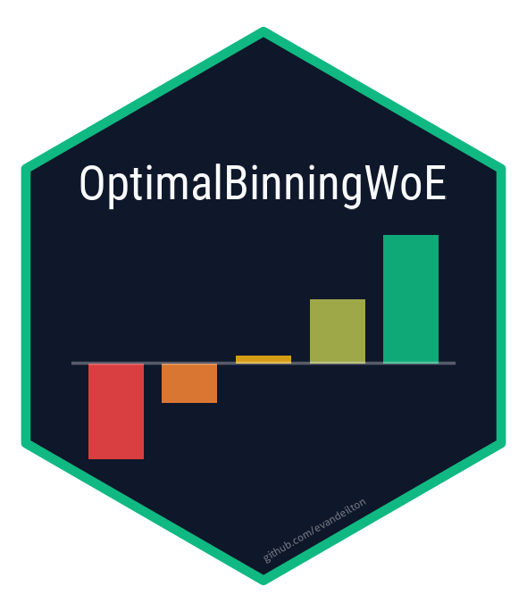

Optimal Binning for Categorical Variables (SAB interface, exact search)
Source:R/obc_sab.R
ob_categorical_sab.RdThis function performs optimal binning for categorical variables by maximizing the Information Value (IV). Up to version 1.14.1 it used a Simulated Annealing (SA) search; since the forensic audit (findings C-02, C-03, C-04) the same interface solves the problem exactly.
Usage
ob_categorical_sab(
feature,
target,
min_bins = 3L,
max_bins = 5L,
bin_cutoff = 0.05,
max_n_prebins = 20L,
bin_separator = "%;%",
initial_temperature = 1,
cooling_rate = 0.995,
max_iterations = 1000L,
convergence_threshold = 1e-06,
adaptive_cooling = TRUE
)Arguments
- feature
A character vector or factor representing the categorical predictor variable. Missing values (NA) will be converted to the string "NA" and treated as a separate category.
- target
An integer vector containing binary outcome values (0 or 1). Must be the same length as
feature. Cannot contain missing values.- min_bins
Integer. Minimum number of bins to create. Must be at least 2. Default is 3.
- max_bins
Integer. Maximum number of bins to create. Must be greater than or equal to
min_bins. Default is 5.- bin_cutoff
Numeric. Minimum relative frequency of every bin: the search only considers bins holding at least this proportion of the observations (if no partition with
min_binsbins can satisfy it, the constraint is dropped). Value must be between 0 and 1. Default is 0.05 (5%).- max_n_prebins
Integer. Maximum number of pre-bins (runs of consecutive categories in shrunk-rate order) entering the exact search; it bounds its cost. Must be greater than or equal to
max_bins. Default is 20.- bin_separator
Character string used to separate category names when multiple categories are merged into a single bin. Default is "%;%".
- initial_temperature
Numeric. Kept for backward compatibility; the exact search does not use it. Must be positive. Default is 1.0.
- cooling_rate
Numeric. Kept for backward compatibility; not used. Must be in (0, 1]. Default is 0.995.
- max_iterations
Integer. Kept for backward compatibility; not used. Default is 1000.
- convergence_threshold
Numeric. Kept for backward compatibility; not used. Default is 1e-6.
- adaptive_cooling
Logical. Kept for backward compatibility; not used. Default is TRUE.
Value
A list containing the results of the optimal binning procedure:
idNumeric vector of bin identifiers (1 to n_bins)
binCharacter vector of bin labels, which are combinations of original categories separated by
bin_separatorwoeNumeric vector of Weight of Evidence values for each bin
ivNumeric vector of Information Values for each bin
countInteger vector of total observations in each bin
count_posInteger vector of positive outcomes in each bin
count_negInteger vector of negative outcomes in each bin
total_ivNumeric scalar. Total Information Value across all bins
convergedLogical. Always
TRUE: the search is exact and no iteration budget can stop it earlyiterationsInteger. Always 0 (no iterative search runs)
Details
For a binary target and an IV that is a sum of convex per-bin terms, the optimal grouping of categories into \(k\) bins is contiguous in the ordering of categories by event rate (Fisher, 1958; Breiman et al., 1984, Theorem 4.5). With estimated rates, that ordering and the IV itself must account for how much evidence each category carries, otherwise the search overfits sparse categories (see Minimum evidence below). The algorithm therefore:
sorts the categories by their empirical-Bayes (posterior-mean) event rate \((n_{pos} + m r_0)/(n + m)\), with \(r_0\) the overall event rate and \(m = 20\) pseudo-observations (ties by count, then name);
with more than
max_n_prebinscategories, merges the smallest run of consecutive categories into its neighbour with the closer shrunk rate untilmax_n_prebinspre-bins remain (the pre-binning ofob_categorical_mba);for every \(k\) in
[min_bins, max_bins], runs a dynamic program over that order which returns the partition into \(k\) contiguous groups of pre-bins with maximum IV under the same prior, i.e. with shares \(p_i = (n_{i,pos} + m r_0)/(N_{pos} + k m r_0)\) and \(q_i = (n_{i,neg} + m (1 - r_0))/(N_{neg} + k m (1 - r_0))\), in \(O(k g^2)\) for \(g\) pre-bins, with every bin holding at leastbin_cutoffof the observations (the constraint is dropped only when no partition can satisfy it);among these partitions keeps the one with the largest reported
total_iv(the smallest \(k\) on ties) and reports the bins in WoE order.
The result is exact for this objective (over the categories themselves
when there are at most max_n_prebins of them). The former
simulated-annealing
search stopped after about 200 iterations without improvement, penalized
solutions by their arbitrary bin labels and re-heated its temperature,
which left it 11–17% below the optimum on 40–150 categories while
reporting converged = TRUE.
Minimum evidence. The raw event rate of a category with a few rows is mostly noise: with 200 categories of about 10 rows, the categories that had no event by chance sit together at the bottom of the raw-rate order, and maximizing the training IV isolates them in a bin whose training rate badly understates its rate on new data (winner's curse). The posterior mean ranks a small category near \(r_0\) unless its data say otherwise, and large categories keep their raw-rate rank (Gelman et al., 2013, ch. 5); under the prior a bin earns IV in proportion to the evidence it carries. The reported WoE and IV keep the smoothing defined below.
Mathematical definitions: $$WoE_i = \ln\left(\frac{p_i^{(1)}}{p_i^{(0)}}\right)$$ where \(p_i^{(1)}\) and \(p_i^{(0)}\) are the proportions of positive and negative cases in bin \(i\), respectively, adjusted using Bayesian smoothing.
$$IV = \sum_{i=1}^{n} (p_i^{(1)} - p_i^{(0)}) \times WoE_i$$
Note
Target variable must contain both 0 and 1 values.
Empty strings in the feature vector are not allowed and will cause an error.
For datasets with very few observations in either class (<5), warnings will be issued as results may be unstable.
The exact search costs \(O(k g^2)\) for each \(k\) in
[min_bins, max_bins]and \(g \le\)max_n_prebinspre-bins, plus \(O(m \log m)\) to order and pre-bin \(m\) categories.When the number of unique categories is less than
max_bins, each category forms its own bin unless that would violatebin_cutoff.The result is deterministic: it uses no random numbers, so it does not depend on
set.seed(), and it is identical on every platform.
References
Fisher, W. D. (1958). On grouping for maximum homogeneity. Journal of the American Statistical Association, 53(284), 789-798.
Breiman, L., Friedman, J. H., Olshen, R. A., & Stone, C. J. (1984). Classification and Regression Trees. Wadsworth.
Gelman, A., Carlin, J. B., Stern, H. S., Dunson, D. B., Vehtari, A., & Rubin, D. B. (2013). Bayesian Data Analysis (3rd ed.), ch. 5. Chapman & Hall/CRC.
Examples
# Generate sample data
set.seed(123)
n <- 1000
feature <- sample(letters[1:8], n, replace = TRUE)
target <- rbinom(n, 1, prob = ifelse(feature %in% c("a", "b"), 0.7, 0.3))
# Perform optimal binning
result <- ob_categorical_sab(feature, target)
print(result[c("bin", "woe", "iv", "count")])
#> $bin
#> [1] "c%;%f%;%h" "e" "d" "g" "a%;%b"
#>
#> $woe
#> [1] -0.5956586 -0.4336957 -0.3871070 -0.2096304 1.2813219
#>
#> $iv
#> [1] 0.122239809 0.021603579 0.016337184 0.005811696 0.415869797
#>
#> $count
#> [1] 374 121 114 135 256
#>
# With custom parameters
result2 <- ob_categorical_sab(
feature = feature,
target = target,
min_bins = 2,
max_bins = 4
)
# Handling missing values
feature_with_na <- feature
feature_with_na[sample(length(feature_with_na), 50)] <- NA
result3 <- ob_categorical_sab(feature_with_na, target)